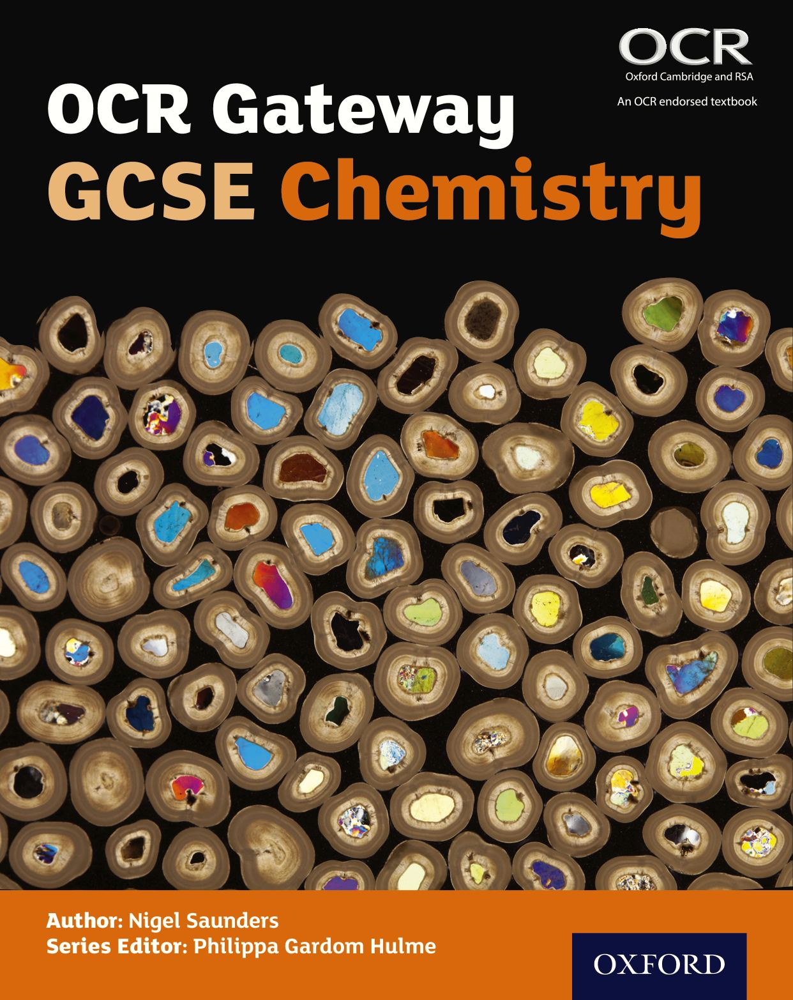

Close
Preliminary page. Not bookmarked. No resources available. No notes.
OCR Gateway GCSE Chemistry Student Book
© Oxford University Press
Help
My Bookmarks
Notebook
Previous page
Next page
Close Resources
Table of contents
Title page
i
Contents
ii
How to use this book
iv
Kerboodle
vi
Assessment objectives
vii
Working Scientifically
2
WS1 The power of science
2
WS2 Methods, models, and communication
4
WS3 Asking scientific questions
6
WS4 Planning an investigation
8
WS5 Obtaining high-quality data
10
WS6 Presenting data
12
WS7 Interpreting data
14
WS8 Errors and uncertainties
16
C1.1 The particle model
18
C1.1.1 Introducing particles
18
C1.1.2 Chemical and physical changes
20
C1.1.3 Limitations of the particle model
22
C1.1 Summary questions
24
C1.1 Revision questions
25
C1.2 Atomic structure
26
C1.2.1 Atomic structure
26
C1.2.2 Isotopes
28
C1.2.3 Developing the atomic model
30
C1.2 Summary questions
32
C1.2 Revision questions
33
C1 Topic summary
34
C2.1 Purity and separating mixtures
36
C2.1.1 Relative formula mass
36
C2.1.2 Empirical formula
38
C2.1.3 Pure and impure substances
40
C2.1.4 Filtration and crystallisation
42
C2.1.5 Distillation
44
C2.1.6 Chromatography
46
C2.1.7 Purification and checking purity
48
C2.1 Summary questions
50
C2.1 Revision questions
51
C2.2 Bonding
52
C2.2.1 Metals and non-metals
52
C2.2.2 Electronic structures
54
C2.2.3 Forming ions
56
C2.2.4 Ionic compounds
58
C2.2.5 Simple molecules
60
C2.2.6 Giant covalent structures
62
C2.2.7 Polymer molecules
64
C2.2.8 Structure of metals
66
C2.2.9 Developing the Periodic Table
68
C2.2.10 Atomic structure and the Periodic Table
70
C2.2 Summary questions
72
C2.2 Revision questions
73
C2.3 Properties of materials
74
C2.3.1 Carbon
74
C2.3.2 Changing state
76
C2.3.3 Bulk properties of materials
78
C2.3.4 Nanoparticles
80
C2.3 Summary questions
82
C2.3 Revision questions
83
C2 Topic summary
84
C3.1 Introducing chemical reactions
86
C3.1.1 Formulae of elements and molecules
86
C3.1.2 Formulae of ionic compounds
88
C3.1.3 Conservation of mass
90
C3.1.3 Chemical equations
92
C3.1.4 Half equations and ionic equations
94
C3.1.5 The mole
96
C3.1.6 Mole calculations
98
C3.1 Summary questions
100
C3.1 Revision questions
101
C3.2 Energetics
102
C3.2.1 Exothermic and endothermic reactions
102
C3.2.2 Reaction profiles
104
C3.2.3 Calculating energy changes
106
C3.2 Summary questions
108
C3.2 Revision questions
109
C3.3 Types of chemical reaction
110
C3.3.1 Redox reactions
110
C3.3.2 The pH scale
112
C3.3.3 Neutralisation
114
C3.3.4 Reactions of acids
116
C3.3.5 Hydrogen ions and pH
118
C3.3 Summary questions
120
C3.3 Revision questions
121
C3.4 Electrolysis
122
C3.4.1 Electrolysis of molten salts
122
C3.4.2 Electrolysis of solutions
124
C3.4.3 Electroplating
126
C3.4 Summary questions
128
C3.4 Revision questions
129
C3 Topic summary
130
C4.1 Predicting chemical reactions
132
C4.1.1 Group 1 – the alkali metals
132
C4.1.2 Group 7 – the halogens
134
C4.1.3 Halogen displacement reactions
136
C4.1.4 Group 0 – the noble gases
138
C4.1.5 The transition metals
140
C4.1.6 Reactivity of elements
142
C4.1 Summary questions
144
C4.1 Revision questions
145
C4.2 Identifying the products of chemical reactions
146
C4.2.1 Detecting gases
146
C4.2.2 Detecting cations
148
C4.2.3 Detecting anions
150
C4.2.4 Instrumental methods of analysis
152
C4.2 Summary questions
154
C4.2 Revision questions
155
C4 Topic summary
156
C5.1 Monitoring chemical reactions
158
C5.1.1 Theoretical yield
158
C5.1.2 Percentage yield and atom economy
160
C5.1.3 Choosing a reaction pathway
162
C5.1.4 Concentration of solution
164
C5.1.5 Titrations
166
C5.1.6 Titration calculations
168
C5.1.7 Gas calculations
170
C5.1 Summary questions
172
C5.1 Revision questions
173
C5.2 Controlling reactions
174
C5.2.1 Rate of reaction
174
C5.2.2 Temperature and reaction rate
176
C5.2.3 Concentration, pressure, and reaction rate
178
C5.2.4 Particle size and reaction rate
180
C5.2.5 Catalysts and reaction rate
182
C5.2 Summary questions
184
C5.2 Revision questions
185
C5.3 Equilibria
186
C5.3.1 Reversible reactions
186
C5.3.2 Equilibrium position
188
C5.3.3 Choosing reaction conditions
190
C5.3 Summary questions
192
C5.3 Revision questions
193
C5 Topic summary
194
C6.1 Improving processes and products
196
C6.1.1 Fertilisers
196
C6.1.2 Making fertilisers
198
C6.1.3 The Haber process
200
C6.1.4 The Contact process
202
C6.1.5 Making ethanol
204
C6.1.6 Extracting metals
206
C6.1.7 Extracting iron
208
C6.1.8 Extracting aluminium
210
C6.1.9 Biological metal extraction
212
C6.1.10 Alloys
214
C6.1.11 Corrosion
216
C6.1.12 Reducing corrosion
218
C6.1.13 Different materials
220
C6.1.14 Composite materials
222
C6.1.15 Choosing materials
224
C6.1.16 Recycling materials
226
C6.1 Summary questions
228
C6.1 Revision questions
229
C6.2 Organic chemistry
230
C6.2.1 Alkanes
230
C6.2.2 Alkenes
232
C6.2.3 Alcohols
234
C6.2.4 Carboxylic acids
236
C6.2.5 Alkanes from crude oil
238
C6.2.6 Cracking oil fractions
240
C6.2.7 Addition polymers
242
C6.2.8 Biological polymers
244
C6.2.9 Condensation polymers
246
C6.2.10 Producing electricity using chemistry
248
C6.2 Summary questions
250
C6.2 Revision questions
251
C6.3 Interpreting and interacting with Earth Systems
252
C6.3.1 Forming the atmosphere
252
C6.3.2 Pollution and the atmosphere
254
C6.3.3 Climate change
256
C6.3.4 Water for drinking
258
C6.3 Summary questions
260
C6.3 Revision questions
261
C6 Topic summary
262
C7 Practical skills
264
C1 Reactivity trend
264
C2 Electrolysis
266
C3 Separation techniques
268
C4 Distillation
270
C5 Identification of species
272
C6 Titration
274
C7 Production of salts
276
C8 Measuring rates of reaction
278
Revision questions
280
Maths for GCSE Chemistry
290
Glossary
306
Index
314
Reference material
320

Back
Play
00:00
/
00:00
Set volume to 100%
Set volume to 90%
Set volume to 80%
Set volume to 70%
Set volume to 60%
Set volume to 50%
Set volume to 40%
Set volume to 30%
Set volume to 20%
Set volume to 10%
Mute
Stop
Go to previous page
Previous page
Go to next page
Next page
Resources
Open Linked resources
Open Linked resources
Open My notes
Open My notes
Open Bookmarks
Open Bookmarks
Open Annotation tools
Open Annotation tools
Undo
Redo
C
ursor
P
en
H
ighlighter
E
raser
S
ticky Note
Spotli
g
ht
Save
Clear all
Whole title
Current page
Hide
Change Overlay
Change Overlay
Overlay
None
Red overlay
Blue overlay
Yellow overlay
Fullscreen
Fullscreen
Screen switch
Single page
Single page
Double page
Double page
Hand tool
Hand tool
Magnify tool
Magnify tool
Zoom in
Zoom in
Zoom out
Zoom out
Reset view
Reset view
Open Table of contents
Open Table of contents
Go to previous page
Previous page
Go to page
Go to page
Go to next page
Next page
Reset view
Reset view
Open Table of contents
Open Table of contents
Go to previous page
Previous page
Go to next page
Next page